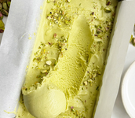
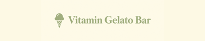

Pistachio Gelato
by Rami Altameemi

A creamy pistachio gelato made with milk, cream, and real pistachio paste. Add chopped pistachios on top for a little crunch. Makes about 6 servings.


A creamy pistachio gelato made with milk, cream, and real pistachio paste. Add chopped pistachios on top for a little crunch. Makes about 6 servings.
I liked the pistachio flavor. It was creamy and the chopped nuts on top made it even better.
The flavor was good, but I left it in the freezer too long. Next time I will let it soften a little before serving.
This was easy to follow. I shared it with my family and they asked me to make it again.